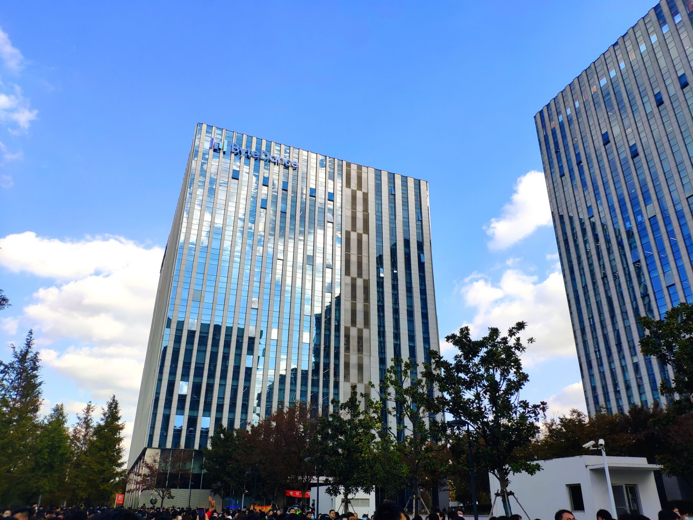

秋招也正式结束了，三方寄出去了，最终选择留在了实习的字节跳动。这里简单聊聊这大半年以来的实习和秋招经历。

四月份的时候投的实习，当时面了阿里、腾讯、美团和字节，最终选择来了字节实习，主要想留在上海。
字节实习主要做的是机器翻译模型的压缩，剪枝量化蒸馏之类的，因为之前没有做过，所以到现在都还有很多东西需要去探索学习。
实习了有半年左右，然后就开始秋招了，虽然本来就想留在字节，但是为了保底，还是得投一投其他公司嘛。
最后面了百度、阿里、腾讯、美团、拼多多，还投过京东、携程之类的图个乐呵，最秀的是京东简历都没过，果然太菜了。
先说说我的情况吧，只有一篇方向冷门的水文，还有一些过去很多年的ACM经历，其他项目和竞赛经历为零，所以很庆幸当时字节实习要了我吧。
面试的话，百度、阿里是北京的部门，腾讯是深圳的，美团、拼多多是上海的，当然我最想留上海，所以bat就没怎么想面。最后的话bat挂了两家，一家没催没消息，上海的话三个色色批，也算圆了我留上海的愿望吧。
百度面我的是百度贴吧推荐部门，我当时就震惊了，百度贴吧还活着？这部门怎么样我不知道，也不做评价，当时心理上就不想面了。然后还是为数不多的上午面的，那天头还昏昏沉沉的，一面上来三道算法题，第一题最弱智的摩尔投票我都没想起来怎么做，后两题也不怎么会。面完就感觉糟糕的很，后面二面效果也是差不多。最后很长一段时间都没有任何消息，感觉上应该是凉了。大概一个月后，hr突然给我打电话，问有没有空聊聊，我当时在回家路上，就说换个时间吧，她也答应了。然后，就没有然后了，官网显示gg。百度的面试体验上来说是最糟糕的，算法题和问的面试知识都不在我的领域内，感觉很差，当然还是因为我太菜了。
阿里是内推的北京的达摩院云小蜜团队，面的还可以吧，三面都挺不错，但是到现在都没有接到过hr面通知。我自然也是懒得问，反正也不会去。刚刚内推的学长问我怎么样了，我人都傻了，这才想起来嘛。当然也没有然后了，我三方都寄走了。阿里面试体验有一说一还是不错的，二面云小蜜负责人就和我聊人生，谈中国互联网发展了，交叉面又是隔壁实验室老师的师弟，所以几分钟就结束了，很轻松。
腾讯也是很离谱，都说wxg今年很难进，果然我被pcg捞起来了，然后还是完全不会的后台开发。打电话问我面不面？说pcg的nlp算法岗名额很少了。我说我不会，他说没事，我是ACM的没问题，然后特么就给我约了面试，我人都傻了。结果第一面还是算法面，1小时5道算法题，我一眼就看出来是打过ACM的人出的题，第一题就很难。最后只做了两道，还错了一道。他来了句，好久没刷题了吧，做的不大行啊。wdnmd，是你捞我，搞个后台开发，还恶心我出这么难的题目，现在还嘲讽我。最后结果当然是挂了，然后就没消息了，也没人捞我。
然后就是上海的三家公司了，体验都是一级棒。
美团的话内推了点评搜索部门，北斗面了两面被转到普通校招了，也没办法，今年北斗入门要求两篇A，我太菜了。最后三面面试官竟然是我的老学长、老校友，所以聊得很开心，轻松过了。最后的话美团也是第一个开奖，价格当时看起来也是很香的。我也是直接签了offer，当然三方不急，其他两家都没定呢。
拼多多就很简单了，安全风控部门，其实也和NLP有很大关系的，算法竞赛也很有用。一面普普通通很正常，二面面试官很喜欢我，商业互吹，最后走了个过场吧。我当时还惊讶拼多多只有两面，也太轻松了吧。没想到hr面后又给我加了一面，不过难度也不大，轻松就过了。最后的话，拼多多也是给我开了很有诚意的价格，不得不说，真香。算上总包比美团高了足足有将近三十万。但是想到拼多多传闻的工作强度、工作环境之类的，我就很纠结选择钱还是生活了。最后还是放弃了，一周六天我还是撑不住，每天23点下班，我就没办法坐在电脑前直播游戏了，就不能写文章给你们看了。
字节我实习的部门万万没想到几乎是整个公司最后转正的部门，其他部门都开奖了很多了，我们却还没转正。因此搞得也是很焦虑，也一度想过溜了吧，美团拼多多挺好的。半年来做的东西虽然看起来也不solid，方法也很简单。现在看了些更加深入的论文后，愈发觉得做的挺弱智的。但是很感谢leader们对我的欣赏吧，说起来在公司我依旧和在学校一样活跃，喜欢水群，啥都喜欢搞搞。现在还成为了组里的logo设计师，推广营销组里的技术，前端也能搞了娱乐娱乐，还能训训模型，当然主业还是钻研算法，啥事情都能插上一手。最后开的奖也很不错吧，算上补贴之类的比美团略高，比拼多多低了二十万多吧。不过经过多次考虑后，我还是选择了留下。
总的来说，我的面试过程没有什么参考价值，不像网上说的那些SVM、xgboost、决策树之类的考一堆。我也看过，最后什么都没考，都问的是论文和实习经历。所以大家伙努力搞有意义的竞赛、论文、项目吧。
最后说说我为什么选择字节吧。当时有三个选择，美团、字节、拼多多。价格的话，杂七杂八全算在一起的话，可以认为x、x+6、x+27这种水平吧，大差不差。工作时间美团995、字节1095.5，这两家都很自由，其实差别不大，早走都行，美团优点是双休。拼多多11116，这个嘛，基本可以认为没有时间玩了，中午和晚上只能休息一小时，顶不住的。工作内容的话，美团点评搜索，核心部门，研究和工程并存，字节机器翻译、模型压缩吧，目前是偏研究，兼顾线上需求，拼多多安全风控，听说是不出事轻松，出了事或者节假日（各种购物节）就加班加点，看起来还是比较累的。工作环境氛围和福利的话，美团周边看起来一般，地理位置离学校更近，内部的话我也不清楚，开水团出了名的，除了开水没有福利了。字节体验了半年很舒服，三餐不仅免费，还很好吃（强烈推荐），不过我还是没吃胖，环境也很不错，在科技绿洲园区，有自己的一整栋楼，呆着很舒服，每逢节日各种福利，氛围营造的也很好。拼多多不了解，看起来很神秘的样子，全靠网上传闻和热搜了解（那几件事，你懂的），不过拼多多离学校真的好近好近。美团点评搜索的leader也很早就和我聊了，详细介绍了他们部门情况，这个leader感觉就非常的nice，看朋友圈生活也很丰富，想必共事起来也会很舒服。拼多多的leader之前也说过了，也很nice，都很想我去。当然字节这边也不用谈了，个个都是大佬，没什么可说的，一级棒。最后也是跟他们解释了很久为什么我选择留下吧，江湖很小，都是做技术的，还会再相遇的。
既然选择了留下，就更要好好干活了，当然也快写毕业论文了，准备过段时间出去玩个半个月的样子，长这么大还没出去旅游过。然后就回来写毕业论文，还是得稳一手，万一延毕了呢？然后就得继续看论文，研究我的模型压缩了，还有很长的路需要走。至于女朋友嘛，随缘吧，时间有了，对的人没了，很多人都是太多顾虑，而最中意的人，emmm，随缘吧，后会有期。
最后，还是很感谢能有机会留在字节吧，自从读了研就感觉自己是个很菜的人，跟一手论文的大佬们差距太大了，能有今天的结果是我最满意的了，我的秋招之旅就这样正式结束了。